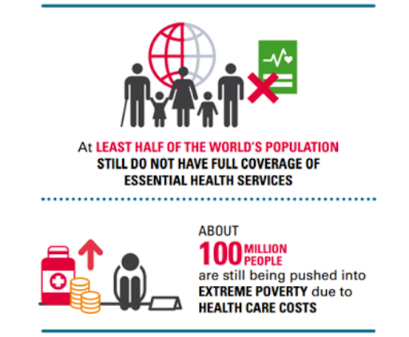
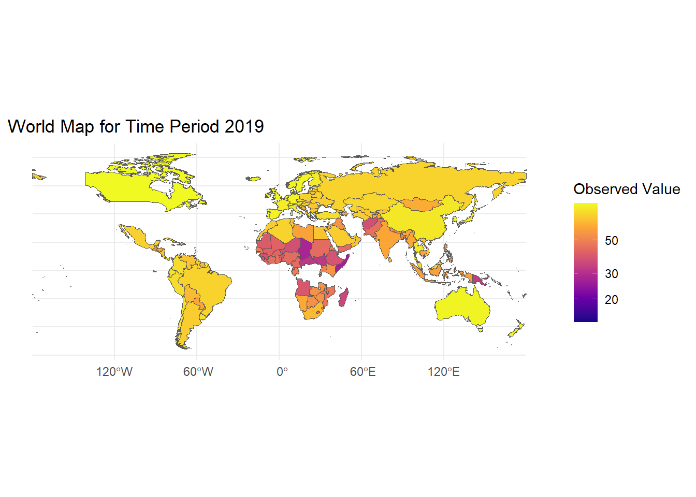
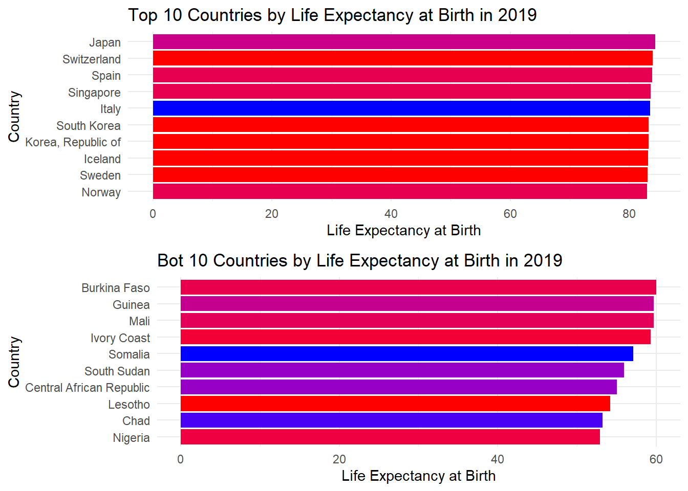
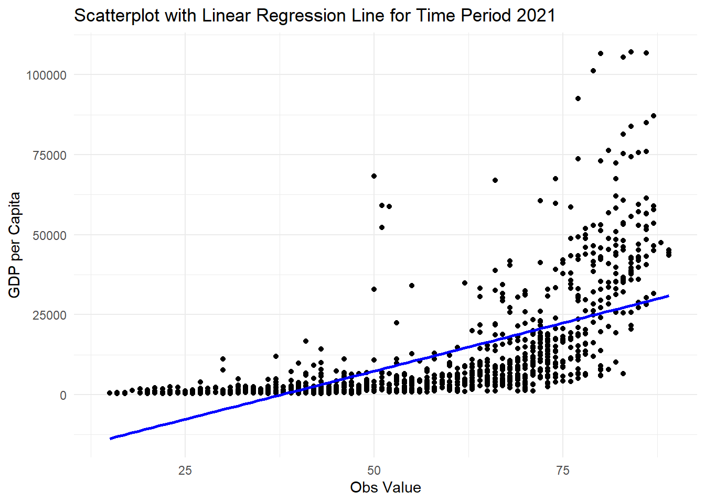
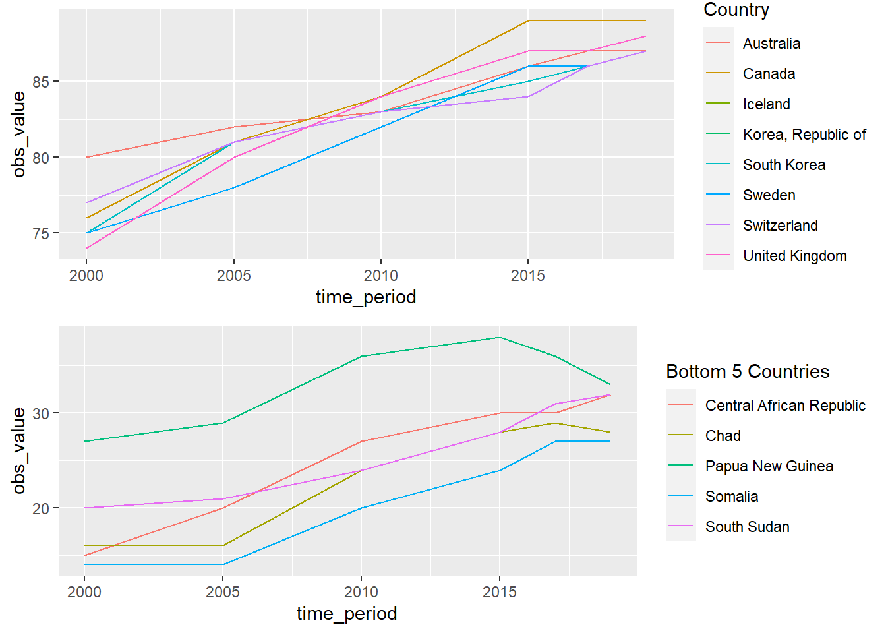

Ajith Thomas | Ajith.thomas7@mail.dcu.ie | Student ID – 22268946
Coverage of Essential health services
Coverage of essential health services can be told as the average level of scope in areas like reproductive, maternal, newborn, child health, infectious diseases, non-communicable diseases etc. This indicator is calculated as the geometric mean of 14 different areas of health care coverage and acts as an index on a unit less scale of 0 to 100. There are many factors effecting coverage of health services of a country such as:-
Economic factors: - The availability of healthcare can significantly impacted by a nation’s economic situation. High levels of poverty may make it difficult for some nations to give their inhabitants access to healthcare since they lack the funding for such systems.
Infrastructure:- The availability and caliber of a nation’s healthcare infrastructure can have an impact on current levels of health care facilities in the country. Urban locations may have higher number of resources as compared to rural which may have restricted access to healthcare services.
Government policies – The government’s decision can significantly affect the availability of healthcare. Usually, governments do place high priority on healthcare as a public benefit and may devote more funds to support healthcare programs.
Cultural considerations: Cultural considerations can also affect how health services are covered. Some cultures could place more value on alternative or traditional medicine, which might result in a lower use of contemporary healthcare services.
Geographic factors: Geographic factors, such as natural disasters, can also impact healthcare coverage. For example, earthquakes or floods can disrupt healthcare services and limit access to healthcare facilities.
Visualization 1 - World map

- Color of the heat map represents the coverage of health services in a country.
- The Legend provides us information on the range of the color in relation to data.
- African continent has been most effected in terms of coverage of essential health services like hospitals, clinics etc.
- This can be logically due to their poorer economic backgrounds.
- North America and Australia have the highest observation value in terms of essential health services.
- Asia and South American region are not far behind in terms of capabilities.
Visualization 2 – Barchart

- Color of the bar chart represents the observation value (which is the coverage of health services in a country).
- The length of the bar chart is based on the life expectancy of the country.
- Top 10 countries have the highest health coverage as well as the highest life expectancy rates (this shows direct co-relation and suggest that the better the health coverage, the more expected years of living.
- Bottom 10 countries, we can assess that their health coverage is significantly lower to the developed nations. This can be attributed to the lack of infrastructure.
Visualization 3- Scatterplot
`geom_smooth()` using formula = 'y ~ x'Warning: Removed 46 rows containing missing values (`geom_point()`).
- X axis is obs value (coverage of essential health services) and Y axis is GDP per capita-
- Direct co-relation between GDP per capita and coverage of health services.
- The richer the country, more health coverage it has and vice versa.
Visualization 4- Time series

- Top 10 rich countries – over two decades, coverage of health services was already very good, as due to which there was incremental improvements
- Bottom 10 poor countries – over two decades, coverage of health services was already very poor – but they have had significant improvements but still has a lot of scope of improvements.